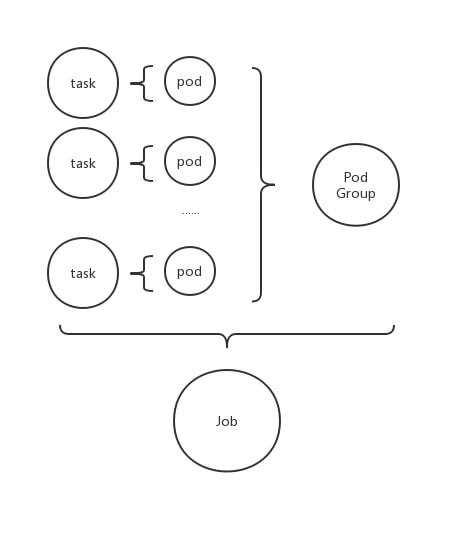
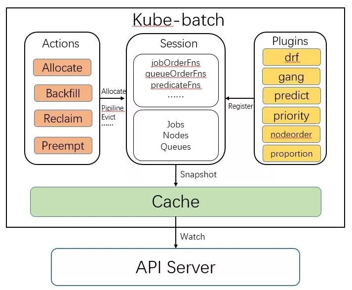

1.概述
kube-batch是k8s下面向高性能计算领域的批调度器。
k8s原生的调度器会将需要启动的容器，放到一个优先队列（Priority Queue）里面，每次从队列里面取出一个容器，将其调度到一个节点上。
AI分布式训练需要所有worker都启动后，训练才能够开始进行。但是原生的调度器的调度是以pod为粒度的，对AI任务很不利，使用原生调度器，可能会出现以下问题：
一个任务包含了10个worker，但是集群的资源只满足9个worker。原生调度器会将任务的9个worker调度并启动，而最后一个worker一直无法启动。这样训练一直无法开始，9个已经启动的worker的资源被浪费了。
两个任务，各包含10个worker，集群的资源只能启动10个worker。两个任务分别有5个worker被启动了，但两个任务都无法开始训练。10个worker的资源被浪费了。
由此可见，原生调度器对于分布式训练的调度存在问题，影响了资源的利用率。而Kubernetes社区提供了一个批调度器kube-batch， 它能够将一个训练任务的多个worker当做一个整体进行调度，只有当任务所有worker的资源都满足，才会将容器在节点上启动。（要不全部，要不全部不，all or none）
如图所示，kube-batch定义了job和pod group的概念，一个job对应一个pod group，一个pod group里有一个或者多个pod，分别对应一个或多个task。

2.整体框架

如图所示，kube-batch中有四个模块，分别是Cache、Session、Plugin和Action。
其中，Cache负责调用API Server的相关接口，维护整个系统内当前资源的分配状态，供调度器查询和计算。Session是调度器对pod/pod group/queue等进行调度时构建的一个对象，一次会话就是一次调度，调度时会从待调度的pod/queue中选择优先级最高的一个进行调度。
个人理解：调度时所依据的相关算法/规则/策略就是Plugin，调度产生的结果就是各种Action。
2.1 Cache
Cache模块封装了对API Server的节点、容器等对象的数据同步逻辑。Kubernetes的数据保存在分布式存储etcd中，所有对数据的查询和操作都通过调用API Server的接口，而非直接操作etcd。在调度时，需要集群中的节点和容器的使用资源和状态等信息。Cache模块通过调用Kubernetes的SDK，通过watch机制监听集群中的节点、容器的状态变化，将信息同步到自己的数据结构中。
Cache模块还封装了对API server的接口的调用。比如Cache.Bind这个接口，会去调用API Server的Bind接口，将容器绑定到指定的节点上。在kube-batch中只有cache模块需要和API Server交互，其他模块只需要调用Cache模块的接口。
2.2 Session
Session模块是将其他三个模块串联起来的一个模块。Kube-batch在每个调度周期开始时，都会新建一个Session对象，这个Session的初始化时，会做以下操作：
调用Cache.Snapshot接口，将Cache中节点、任务和队列的信息拷贝一份副本，之后在这个调度周期中使用这份副本进行调度。因为Cache的数据会不断变化，为了保持同个调度周期中的数据一致性，在一开始就拷贝了一份副本。
将配置中的各个Plugin初始化，然后调用plugin的OnSessionOpen接口。Plugin在OnSessionOpen中，会初始化自己需要的数据，并将一些回调函数注册到session中。Plugin可以向Session中注册的函数是：
- jobOrderFns： 决定哪个训练任务优先被处理（调度、回收、抢占）
- queueOrderFns：决定哪个训练队列优先被处理
- taskOrderFns：决定任务中哪个容器优先被处理
- predicateFns： 判断某个节点是否满足容器的基本调度要求。比如容器中指定的节点的标签
- nodeOrderFns： 当多个节点满足容器的调度要求时，优先选择哪个节点
- preemptableFns： 决定某个容器是否可以被抢占
- reclaimableFns ：决定某个容器是否可以被回收
- overusedFns： 决定某个队列使用的资源是否超过限额，是的话不再调度对队列中的任务
- jobReadyFns：判断某个任务是否已经准备好，可以调用API Server的接口将任务的容器调度到节点
- jobPipelinedFns ： 判断某个任务是否处于Pipelined状态
- jobValidFns： 判断某个任务是否有效
Plugin不需要注册上面所有的函数，而是可以根据自己的需要，注册某几个函数。比如Predict plugin就只注册了predicateFns这个函数到Session中。
而某些plugin的使用与否（包括某些action使用与否）都由配置文件决定:(kube-batch/pkg/scheduler/util.go)
var defaultSchedulerConf = `
actions: "allocate, backfill"
tiers:
- plugins:
- name: priority
- name: gang
- plugins:
- name: drf
- name: predicates
- name: proportion
- name: nodeorder
```
可知默认配置使用2种action(allocate和backfill)和6种plugin。（tiers是什么意思暂时不明）
代码可以参考：
(`kube-batch/pkg/scheduler/framework/framework.go`)和
(`kube-batch/pkg/scheduler/framework/session.go`)
### 2.3 Plugin
Plugin模块顾名思义，提供了一种可插拔的方式，向调度提供不同的策略的实现。
如整体框架中所示，目前有7个Plugin，它们分别是：
+ for Jobs
+ drf：实现了Dominant Resouce Fairenss算法，这个算法能够有效对多种“主要资源”（CPU、Memory、GPU）进行调度。
+ gang：实现了gang scheduling的逻辑，即保证任务所需worker同时被启动。
+ predict：判断某个节点是否满足容器的基本要求。
+ priority： 根据容器和队列设置的PriorityClass决定容器和队列的优先级。
+ node order：决定满足调度要求的节点中，哪个节点优先被选择。
+ conformance：
+ for Queues:
+ proportion： 根据队列设置的权重决定每个队列分配到的资源。
下面对部分plugin进行说明。
#### 2.3.1 drf
<div align=center><img src = '/2020/1/kube-batch/3.png' style="zoom:70%" title="drf"/></div>
目的是尽量避免集群内某一类资源使用比例偏高，而其他类型资源使用比例却很低的不良状态。在调度时，让具有最低资源占用比例的任务具有高优先级。
代码位于`kube-batch/pkg/scheduler/plugins/drf/drf.go`，主要关注`onSessionOpen`函数：
1. 统计集群中所有node可分配资源总量
2. 统计Job资源申请，计算资源占比（资源申请/资源总量）
3. 注册Job排序函数，根据资源占比进行排序，主要资源占比越低job优先级越高
4. 注册事件处理函数，包括分配函数以及驱逐函数，函数实现比较简单，就是当task发生变化时，增加（分配）/减少（驱逐）Job资源申请总量，并且更新资源占比。
drf注册2个function，分别是:
+ `jobOrderFn` 是job的排序函数，会让share值越小的job排在最前面，即拥有最高的优先级，这个是实现drf的关键。
+ `preemptableFn`返回可抢占的job列表，job的筛选规则是：如果待选job的share值大于将被调度的job的share值，则选中该待选job。
#### 2.3.2 gang
gang需要实现的策略是只有当job中的全部pod，或者用户指定的某几个pod都分配到资源后，才真正将pod调度到node上。（即先从逻辑上分配资源给pod，等满足条件后才真正进行调度。）
gang注册3个function，分别是：
+ `preemptableFn` 为避免gang的策略被preempt和reclaiｍ干扰，定义了preemptableFn,排除那些还未准备就绪的job，避免其被抢占。（虽然实际上这些job未真正调度到node上去，但是确实从逻辑上把资源分配给它了）
+ `jobOrderFn` 为让已经就绪的job尽快被调度到节点，定义了jobOrderFn ,让已经就绪的job拥有更高的优先级
+ `jobReadyFn` 用来判断一个job是否已经就绪。`jobReady`会调用所有注册了的 plugin的Ready判定函数，只有都判定为ready ,才返回true
#### 2.3.3 predicates
predicates注册预测函数,用来判断某个节点是否满足容器的基本要求，如
+ CheckNodeCondition Predicate
+ CheckNodeUnschedulable Predicate
+ NodeSelector Predicate
+ HostPorts Predicate
+ Toleration/Taint Predicate
+ ...
#### 2.3.4 priority
priority注册
+ task排序函数，根据pod优先级排序
+ job排序函数，根据job优先级排序
#### 2.3.5 proportion
针对队列。
type queueAttr struct { queueID api.QueueID // 队列的id name string // 队列的名字 weight int32 // 队列的权重,决定分配到的资源的多少 share float64 // 参考drf处的share deserved *api.Resource // 声明的资源总量 allocated *api.Resource // 实际分配到的资源总量 request *api.Resource // 该队列中所有job声明的要分配的资源总量 }
proportion根据各个队列声明的权重和全局的资源总量,初始化deserved的值，根据全局的job初始化allocated和request的值。并监听全局的资源释放和申请事件,更新队列的状态。（暂时理解为队列级别的drf策略。）
proportion注册的function分别是：
+ `queueOrderFn` 决定哪一个队列里的job在调度时会被优先考虑,这里沿用了DRF处jobOrderFn的逻辑，
即share值最小的queue 会最优先被考虑.
+ `overusedFn` 判断queue的资源使用是否已经超出限制了，即 allocated > deserved == true
+ `reclaimableFn` 判断一个task是否可以被召回，如果召回之后使得已经分配到的资源小于等于deserved 就不应该被召回。
### 2.4 Action
+ allocate: 将有明确资源需求的pod（task）分配到某个节点
+ backfill: 将未设置资源使用量的pod分配到节点
+ reclaim: 召回满足条件的pod
+ preempt: 抢占已经调度了的满足条件的pod,并将目标pod调度上去
## 3.运行流程
启动一个调度器的过程：
1. 启动cache
2. 载入Scheduler的配置（默认配置为2个action，6个plugin）
3. 等待一个period后，执行调度，开启会话
4. 执行action
代码：（kube-batch\pkg\scheduler\scheduler.go）
// Run runs the Scheduler func (pc *Scheduler) Run(stopCh <-chan struct{}) { var err error
// Start cache for policy.
go pc.cache.Run(stopCh)
pc.cache.WaitForCacheSync(stopCh)
// Load configuration of scheduler
schedConf := defaultSchedulerConf
if len(pc.schedulerConf) != 0 {
if schedConf, err = readSchedulerConf(pc.schedulerConf); err != nil {
glog.Errorf("Failed to read scheduler configuration '%s', using default configuration: %v",
pc.schedulerConf, err)
schedConf = defaultSchedulerConf
}
}
pc.actions, pc.plugins, err = loadSchedulerConf(schedConf)
if err != nil {
panic(err)
}
go wait.Until(pc.runOnce, pc.schedulePeriod, stopCh)
}
func (pc *Scheduler) runOnce() { glog.V(4).Infof("Start scheduling ...") scheduleStartTime := time.Now() defer glog.V(4).Infof("End scheduling ...") defer metrics.UpdateE2eDuration(metrics.Duration(scheduleStartTime))
ssn := framework.OpenSession(pc.cache, pc.plugins)
defer framework.CloseSession(ssn)
for _, action := range pc.actions {
actionStartTime := time.Now()
action.Execute(ssn)
metrics.UpdateActionDuration(action.Name(), metrics.Duration(actionStartTime))
}
}